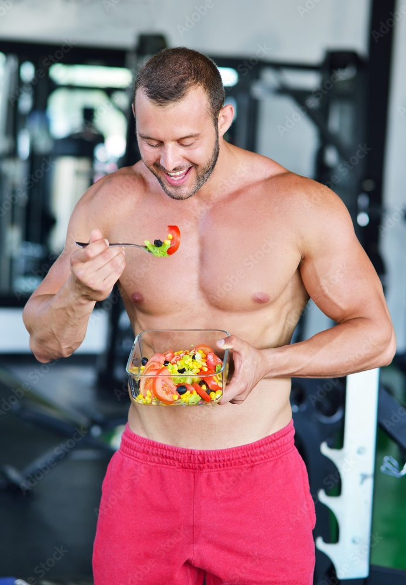

Best Diet Plan For You
#Are You Ready

#Are You Ready
Are you looking for the best Diet Plan for you ? The rules are simple.
All you need to do is start eating right food. However, in India, this can
feel like an insurmountable challenge, given our food culture and dietary
habits.For instance, a typical Indian meal is high in carbohydrates and
sugar.We eat a lot of potatoes, rice, and sweets.
We also love our snacks
and can't imagine a day without our fix of namkeens and bhujias. Even we
encourage our friends and family into eating more, as a sign of hospitality
and affection, and consider refusing, an extra helping a rebuff. To top it
all, we've never embraced physical exercise as essential. So, it isn't a
surprise that India is battling with a growing problem of obesity.
But, the answer doesn't lie in shunning Indian food in favour of foreign
ingredients or fad diets. Moreover, you'll find that the best Indian diet
plan consists of foods that you've already got in your kitchen and which
will enable you to lose weight by making a few changes to your diet
A lot can be spoken about what goes into an ideal diet chart. However, one's nutritional requirement varies based on various factors. It could change depending on gender, for example, male dietary requirements vary from that of a female.
Geography can play a role as well, with North Indian diets being largely different from South Indian ones. So, here meal preferences come into play since the consumption of food by a vegetarian or a vegan differ largely from that by a non-vegetarian.
However, we have put together a diet plan ideal for weight loss with Indian food. This 7 day diet plan also known as a 1200 calorie diet plan is a sample, and should not be followed by any individual without consulting a nutritionist.
One way to lose weight quickly is to cut back on sugars and starches, or carbohydrates. This could be with a low carb eating plan or by reducing refined carbs and replacing them with whole grains.
When you do that, your hunger levels go down, and you generally end up eating fewer calories (1Trusted Source).
With a low carb eating plan, you'll utilize burning stored fat for energy instead of carbs.
If you choose to eat more complex carbs like whole grains along with a calorie deficit, you'll benefit from higher fiber and digest them more slowly. This makes them more filling to keep you satisfied.
Eating a recommended amount of protein is essential to help preserve your health and muscle mass while losing weight (5Trusted Source).
Evidence suggests that eating adequate protein may improve cardiometabolic risk factors, appetite, and body weight, (6Trusted Source, 7Trusted Source, 8Trusted Source).
Here's how to determine how much you need to eat without eating too much. Many factors determine your specific needs, but generally, an average person needs (9Trusted Source):
Diets with adequate protein can also help:
Don't be afraid to load your plate with leafy green vegetables. They're packed with nutrients, and you can eat very large amounts without greatly increasing calories and carbs.
Don't be afraid of eating fats.
Your body still requires healthy fats no matter what eating plan you choose. Olive oil and avocado oil are great choices for including in your eating plan.
Other fats such as butter and coconut oil should be used only in moderation due to their higher saturated fat content (12Trusted Source).
Vegetables to include for low carb or low calorie eating plans
You may lose 5 to 10 pounds (2.3 to 4.5 kg) of weight, sometimes more, in the first week of a diet plan and then lose weight consistently after that. The first week is usually a loss of both body fat and water weight.
If you're new to dieting, weight loss may happen more quickly. The more weight you have to lose, the faster you'll lose it.
Unless your doctor suggests otherwise, losing 1 to 2 pounds per week is usually a safe amount. If you're trying to lose weight faster than that, speak to your doctor about a safe level of calorie reduction.
| 6:30 AM | 8:00 AM | 12:00 PM | 2:00 PM | 2:10 PM | 4:00 PM | 5:30 PM | 8:50 PM | 9:00 PM | |
|---|---|---|---|---|---|---|---|---|---|
| Day 1 | Cucumber Detox Water (1 glass) | Skim Milk Yoghurt (1 cup (8 fl oz)) Multigrain Toast (2 toast) | Skimmed Milk Paneer (100 grams) | Mixed Vegetable Salad (1 katori) | Sauteed Vegetables with Paneer (1 katori) Roti (1 roti/chapati) Green Chutney (2 tablespoon) | Banana (0.5 small (6″ to 6-7/8″ long)) Buttermilk (1 glass) | Tea with Less Sugar and Milk (1 teacup) | Mixed Vegetable Salad (1 katori) | Lentil Curry (0.75 bowl) Methi Rice (0.5 katori) |
| Day 2 | Cucumber Detox Water (1 glass) | Curd (1.5 katori) Mixed Vegetable Stuffed Roti (2 pieces) | Skimmed Milk Paneer (100 grams) | Mixed Vegetable Salad (1 katori) | Lentil Curry (0.75 bowl) Methi Rice (0.5 katori) | Apple (0.5 small (2-3/4″ dia)) Buttermilk (1 glass) | Coffee with Milk and Less Sugar (0.5 tea cup) | Mixed Vegetable Salad (1 katori) | Sauteed Vegetables with Paneer (1 katori) Roti (1 roti/chapati) Green Chutney (2 tablespoon) |
| Day 3 | Cucumber Detox Water (1 glass) | Skim Milk Yoghurt (1 cup (8 fl oz)) Multigrain Toast (2 toast) | Skimmed Milk Paneer (100 grams) | Mixed Vegetable Salad (1 katori) | Sauteed Vegetables with Paneer (1 katori) Roti (1 roti/chapati) Green Chutney (2 tablespoon) | Banana (0.5 small (6″ to 6-7/8″ long)) Buttermilk (1 glass) | Tea with Less Sugar and Milk (1 teacup) | Mixed Vegetable Salad (1 katori) | Lentil Curry (0.75 bowl) Methi Rice (0.5 katori) |
| Day 4 | Cucumber Detox Water (1 glass) | Fruit and Nuts Yogurt Smoothie (0.75 glass) Egg Omelette (1 serve(one egg)) | Skimmed Milk Paneer (100 grams) | Mixed Vegetable Salad (1 katori) | Green Gram Whole Dal Cooked (1 katori) Bhindi sabzi (1 katori) Roti (1 roti/chapati) | Orange (1 fruit (2-5/8″ dia)) Buttermilk (1 glass) | Coffee with Less Sugar and Milk (0.5 teacup) | Mixed Vegetable Salad (1 katori) | Palak Chole (1 bowl) Steamed Rice (0.5 katori) |
| Day 5 | Cucumber Detox Water (1 glass) | Skim Milk Yoghurt (1 cup (8 fl oz)) Multigrain Toast (2 toast) | Skimmed Milk Paneer (100 grams) | Mixed Vegetable Salad (1 katori) | Low Fat Paneer Curry (1.5 katori) Missi Roti (1 roti) | Papaya (1 cup 1″ pieces) Buttermilk (1 glass) | Tea with Less Sugar and Milk (1 teacup) | Mixed Vegetable Salad (1 katori) | Curd (1.5 katori) Aloo Baingan Tamatar Ki Sabzi (1 katori) Roti (1 roti/chapati) |
| Day 6 | Cucumber Detox Water (1 glass) | Mixed Sambar (1 bowl) Idli (2 idli) | Skimmed Milk Paneer (100 grams) | Mixed Vegetable Salad (1 katori) | Curd (1.5 katori) Aloo Baingan Tamatar Ki Sabzi (1 katori) Roti (1 roti/chapati) | Cut Fruits (1 cup) Buttermilk (1 glass) | Coffee with Milk and Less Sugar (0.5 tea cup) | Mixed Vegetable Salad (1 katori) | Green Gram Whole Dal Cooked (1 katori)Bhindi sabzi (1 katori) Roti (1 roti/chapati) |
| Day 7 | Cucumber Detox Water (1 glass) | Besan Chilla (2 cheela) Green Garlic Chutney (3 tablespoon) | Skimmed Milk Paneer (100 grams) | Mixed Vegetable Salad (1 katori) | Palak Chole (1 bowl) Steamed Rice (0.5 katorn) | Apple(0.5 small (2-3/4″ dia)) Buttermilk (1 glass) | Tea with Less Sugar and Milk (1 teacup) | Mixed Vegetable Salad (1 katori) | Low Fat Paneer Curry (1 katori) Missi Roti (1 roti) |
SUMMARY
Assemble each meal out of a protein source, healthy fat source, complex carb, and vegetables.
Leafy green vegetables are a great way to bulk up a meal with low calories and lots of nutrients.

Bodybuilding is centered around building your body's muscles through weightlifting and nutrition.
Whether recreational or competitive, bodybuilding is often referred to as a lifestyle, as it involves both the time you spend in and outside the gym.
In order to maximize your results from the gym, you must focus on your diet, as eating the wrong foods can be detrimental to your bodybuilding goals.
Daily calorie needs range from 1,600 to 2,400 calories per day for adult women and 2,000 to 3,000 calories for adult men.
The goal for competitive bodybuilders is to increase muscle mass in the bulking phase and reduce body fat in the cutting phase. Hence, you consume more calories in the bulking phase than in the cutting phase.
The easiest way to determine how many calories you need is to weigh yourself at least three times a week and record what you eat using a calorie tracking app.
If your weight stays the same, the daily number of calories you eat is your maintenance calories, in other words, you're not losing or gaining weight, but maintaining it.
During your bulking phase, it's recommended to increase your calorie intake by 15%. For example, if your maintenance calories are 3,000 per day, you should eat 3,450 calories per day (3,000 x 0.15 = 450) during your bulking phase (6Trusted Source).
When transitioning from a bulking to a cutting phase, you would instead decrease your maintenance calories by 15%, meaning you would eat 2,550 calories per day instead of 3,450.
As you gain weight in the bulking phase or lose weight in the cutting phase, you will need to adjust your calorie intake at least monthly to account for changes in your weight.
Increase your calories as you gain weight in the bulking phase and decrease your calories as you lose weight in the cutting phase for continued progression.
During either phase, it's recommended not to lose or gain more than 0.5 to 1% of your body weight per week. This ensures that you don't lose too much muscle during the cutting phase or gain too much body fat during the bulking phase (7Trusted Source).
Like training, diet is a vital part of bodybuilding.
Eating the right foods in the appropriate amounts provides your muscles with the nutrients they need to recover from workouts and grow bigger and stronger.
Conversely, consuming the wrong foods or not consuming enough of the right ones will leave you with subpar results.
Here are foods you should focus on and foods to limit or avoid:
| Breakfast | Snack | Lunch | Snack | Dinner | |
|---|---|---|---|---|---|
| Day 1 | Scrambled eggs with mushrooms and oatmeal. | Low-fat cottage cheese with blueberries. | Venison burger, white rice and broccoli. | Protein shake and a banana. | Salmon, quinoa and asparagus. |
| Day 2 | Protein pancakes with light-syrup, peanut butter and raspberries. | Hard-boiled eggs and an apple | Sirloin steak, sweet potato and spinach salad with vinaigrette. | Protein shake and walnuts. | Ground turkey and marinara sauce over pasta. |
| Day 3 | Chicken sausage with egg and roasted potatoes. | Greek yogurt and almonds. | Turkey breast, basmati rice and mushrooms. | Protein shake and grapes. | Mackerel, brown rice and salad leaves with vinaigrette. |
| Day 4 | Ground turkey, egg, cheese and salsa in a whole-grain tortilla. | Yogurt with granola. | Chicken breast, baked potato, sour cream and broccoli. | Protein shake and mixed berries. | Stir-fry with chicken, egg, brown rice, broccoli, peas and carrots. |
| Day 5 | Blueberries, strawberries and vanilla Greek yogurt on overnight oats. | Jerky and mixed nuts. | Tilapia fillets with lime juice, black and pinto beans and seasonal veggies. | Protein shake and watermelon. | Ground beef with corn, brown rice, green peas and green beans. |
| Day 6 | Ground turkey and egg with corn, bell peppers, cheese and salsa. | Can of tuna with crackers. | Tilapia fillet, potato wedges and bell peppers. | Protein shake and pear. | Diced beef with rice, black beans, bell peppers, cheese and pico de gallo. |
| Day 7 | Eggs sunny-side up and avocado toast. | Protein balls and almond butter. | Pork tenderloin slices with roasted garlic potatoes and green beans. | Protein shake and strawberries. | Turkey meatballs, marinara sauce and parmesan cheese over pasta. |
SUMMARY
Vary the types of foods in your diet and consume 20 to 30 grams of protein with each meal and snack.
For some people, gaining weight or adding muscle can be just as difficult as losing weight is for others
However, simply adding certain foods to your diet can make your weight gain efforts both healthy and more effective.
A 2,000-calorie diet is considered standard and meets the nutritional needs of most people.
However, depending on your activity level, body size, and goals, you may need more.
Drinking homemade protein smoothies can be a highly nutritious and quick way to gain weight.
Making your own smoothies is the best way since commercial versions are often full of sugar and lack nutrients. It also gives you full control over the flavor and nutrient content.
Here are just a few tasty variations you can try. You can combine each with 2 cups (470 mL) of dairy milk or soy milk if you have lactose intolerance. Both have more nutrients and calories than other alternative milks.
Milk has been used as a weight gainer or muscle builder for decades.
It provides a good balance of proteins, carbs, and fats and is a good source of calcium, as well as other vitamins and minerals (2Trusted Source).
For those trying to add more muscle, milk is an excellent protein source that provides both casein and whey proteins. Research has even shown it can help you add muscle when combined with weightlifting (3).
Additionally, studies have found that milk, or whey and casein combined, can lead to greater mass gain than other protein sources (4).
Try drinking one or two glasses of whole milk (149 calories per cup) as a snack, with a meal, or before and after a workout if you're training (5Trusted Source).
Milk smoothies are also a delicious way to add milk to your diet. For an easy morning protein boost, try blending up 1 cup of frozen berries, 1 cup of whole milk, 2 teaspoons of honey, and 1 teaspoon of vanilla (about 275 calories).
Rice is a convenient, low cost carb source to help you gain weight. Just 1 cup (158 grams) of cooked white rice provides 204 calories, 44 grams of carbs, and very little fat (6Trusted Source).
Rice is also fairly calorie-dense, meaning you can easily obtain a high amount of carbs and calories from a single serving. This helps you eat more food, especially if you have a poor appetite or get full quickly.
Nuts and nut butters are perfect choices if you're looking to gain weight.
Just one small handful of raw almonds (1/4 cup) contains 170 calories, 6 grams of protein, 4 grams of fiber, and 15 grams of healthy fats (7Trusted Source).
Since nuts are very calorie-dense, just two handfuls per day with a meal or as a snack can quickly add hundreds of calories.
You can add nut butters to a variety of snacks or dishes, such as smoothies, yogurts, and crackers, to turn them into a high calorie snack in no time.
Potatoes and other starchy foods are a very easy and cost-effective way to add in extra calories.
Try to choose one of these healthy sources of starchy carbs:
| Breakfast | Snack | Lunch | Snack | Dinner | |
|---|---|---|---|---|---|
| Day 1 | 1 cup (80 grams) of oats with 1 cup (240 ml) of dairy or plant-based milk, 1 sliced banana, and 2 tablespoons (33 grams) of peanut butter | trail mix made with 1 cup (80 grams) of dry cereal, 1/4 cup (30 grams) of granola, 1/4 cup (34 grams) of dried fruit, and 20 nuts | 1 cup (100 grams) of spaghetti with 3/4 cups (183 grams) of tomato sauce and 4 ounces (112 grams) of cooked ground beef, as well as 1 medium breadstick with 1 tablespoon (14 grams) of butter | 1 cup (226 grams) of cottage cheese and 1/2 cup (70 grams) of blueberries | 4 ounces (110 grams) of salmon, 1 cup (100 grams) of brown rice, and 5 asparagus spears |
| Day 2 | smoothie made with 2 cups (480 ml) of dairy or plant-based milk, 1 cup (227 grams) of yogurt, 1 cup (140 grams) of blueberries, and 2 tablespoons (33 grams) of almond butter. | 1 granola bar, 1 piece of fruit, and 2 pieces of string cheese | 12-inch sub sandwich with meat, cheese, and veggies with 3 ounces (85 grams) of baby carrots, 2 tablespoons (28 grams) of hummus, and apple slices on the side | 1 scoop of whey protein powder mixed in 1 cup (240 ml) of dairy or plant-based milk | 4-ounce (113-gram) sirloin steak, 1 medium-sized (173-gram) baked potato with 1 tablespoon (14 grams) of butter, and 1 cup (85 |
| Day 3 | 3 whole-wheat waffles with 2 tablespoons (33 grams) of peanut butter, 1 orange, and 2 cups (480 ml) of dairy or plant-based milk | 1 nut-based granola bar and 1 ounce (28 grams) of almonds | 6-ounce (170-gram) 90%-lean burger on a whole-wheat bun with 1 tomato slice and lettuce leaf, as well as 1 1/2 cup (86 grams) of homemade sweet potato fries cooked in olive oil | 1 cup (227 grams) of Greek yogurt and 1 cup (140 grams) of strawberries | 4-ounce (112-gram) chicken breast, 1/2 cup (84 grams) of quinoa, and 1 1/3 cups (85 grams) of sugar snap peas |
| Day 4 | 3-egg omelet with sliced onions, red and green bell peppers, and 1/4 cup (28 grams) of shredded cheese with 2 cups (480 ml) of dairy or plant-based milk to drink | 2 tablespoons (33 grams) of peanut butter and 1 banana on 1 slice of whole-wheat bread | 8 ounces (226 grams) of tilapia fillets, 1/4 cup (32 grams) of lentils, and a salad topped with 1/4 cup (30 grams) of walnuts | 2 sliced, hard-boiled eggs atop a mixed green salad | turkey chili made with a 4-ounce (114-gram) turkey breast, chopped onions, garlic, celery, and sweet peppers, 1/2 cup (123 grams) of canned, diced tomatoes, and 1/2 cup (120 grams) of |
| Day 5 | 3whole eggs, 1 apple, and 1 cup (80 grams) of oatmeal made with 1 cup (240 ml) of dairy or plant-based milk | 1 cup (226 grams) of plain yogurt with 1/4 cup (30 grams) of granola and 1/2 cup (70 grams) of raspberries | 6-ounce (168-gram) chicken breast, 1 medium-sized (151-gram) sweet potato, 3/4 cup (85 grams) of green beans, and 1 ounce (28 grams) of nuts | 1/2 cup (130 grams) of chickpeas atop greens | burrito bowl with 6 ounces (170 grams) of chopped sirloin steak, 1/2 cup (130 grams) of black beans, 1/2 cup (90 grams) of brown rice, 1 cup (35 grams) of shredded lettuce and spinach, and 2 tablespoons (16 grams) of salsa |
| Day 6 | 3 whole-wheat waffles with 2 tablespoons (33 grams) of peanut butter, 1 orange, and 2 cups (480 ml) of dairy or plant-based milk | 1 nut-based granola bar and 1 ounce (28 grams) of almonds | 6-ounce (170-gram) 90%-lean burger on a whole-wheat bun with 1 tomato slice and lettuce leaf, as well as 1 1/2 cup (86 grams) of homemade sweet potato fries cooked in olive oil | 1 cup (227 grams) of Greek yogurt and 1 cup (140 grams) of strawberries | 4-ounce (112-gram) chicken breast, 1/2 cup (84 grams) of quinoa, and 1 1/3 cups (85 grams) of sugar snap peas |
| Day 7 | 1 cup (80 grams) of oats with 1 cup (240 ml) of dairy or plant-based milk, 1 sliced banana, and 2 tablespoons (33 grams) of peanut butter | trail mix made with 1 cup (80 grams) of dry cereal, 1/4 cup (30 grams) of granola, 1/4 cup (34 grams) of dried fruit, and 20 nuts | 1 cup (100 grams) of spaghetti with 3/4 cups (183 grams) of tomato sauce and 4 ounces (112 grams) of cooked ground beef, as well as 1 medium breadstick with 1 tablespoon (14 grams) of butter | 1 cup (226 grams) of cottage cheese and 1/2 cup (70 grams) of blueberries | 4 ounces (110 grams) of salmon, 1 cup (100 grams) of brown rice, and 5 asparagus spears |
SUMMARY
This 3,000-calorie, 5-day sample menu includes a variety of nutrient-dense foods, such as lean proteins, healthy fats, fruits, and vegetables.
Make sure most of your calories come from minimally-processed, nutrient-dense foods and reserve sweets and junk foods for the occasional treat.